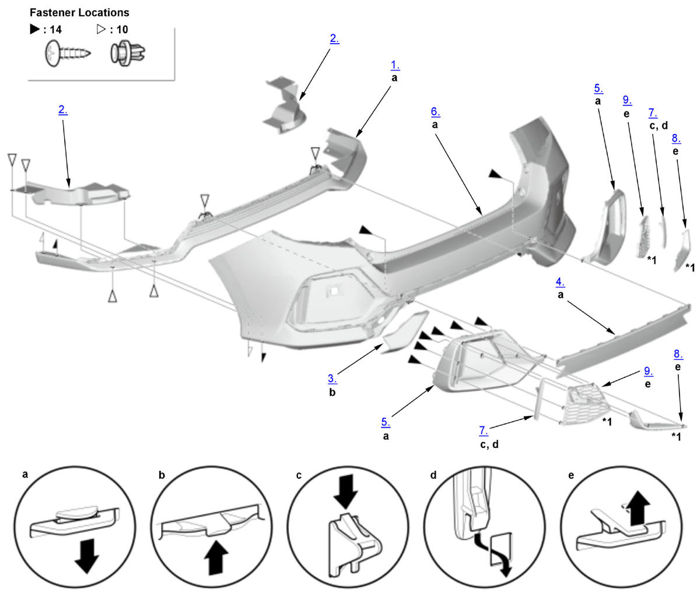

Twin Silencer Type
NOTE:
Numbered call-outs in figure pertain to list numbers in following procedure.

Courtesy of HONDA, U.S.A., INC.| *1 | 2020-21 |
- Rear Bumper Lower Trim - Remove
- Exhaustnote Insulator - Remove
- Rear Towing Hook Cover - Remove
- Rear Bumper Center Trim - Remove
- Rear Bumper Side Trim - Remove
- Rear Bumper Face - Remove
- Reflector - Remove
- Rear Bumper Side Molding - Remove (2020-21)
- Rear Bumper Side Mesh - Remove (2020-21)
- All Disassembled Parts - Assemble
1. Assemble the parts in the reverse order of disassembly.